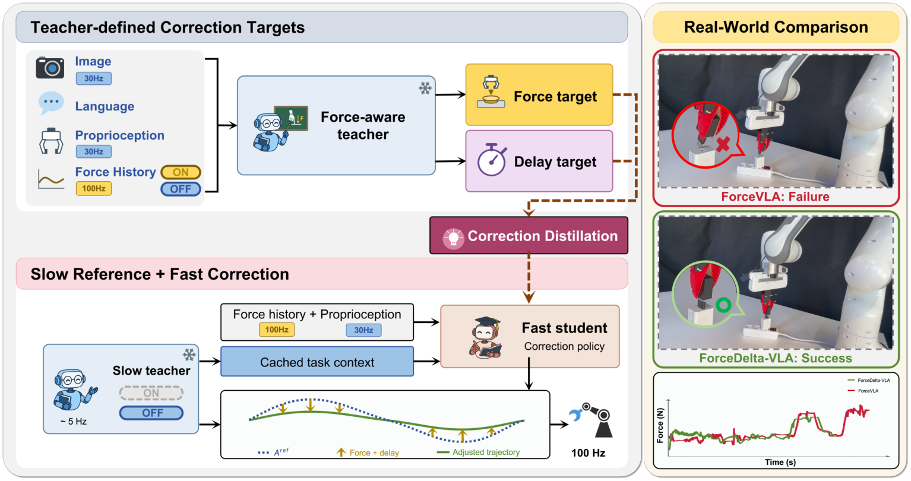
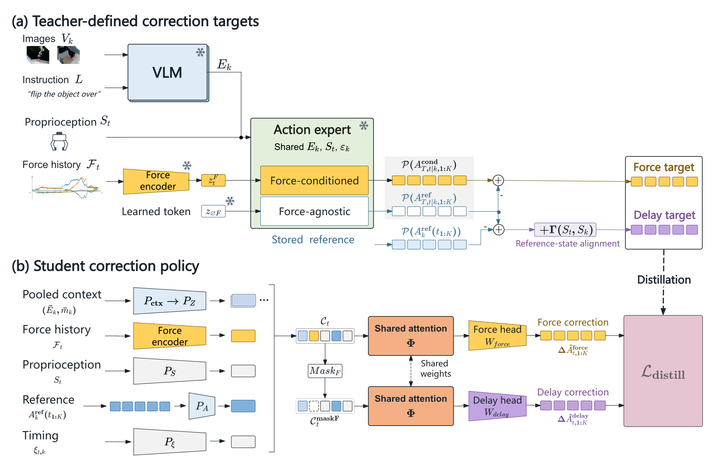
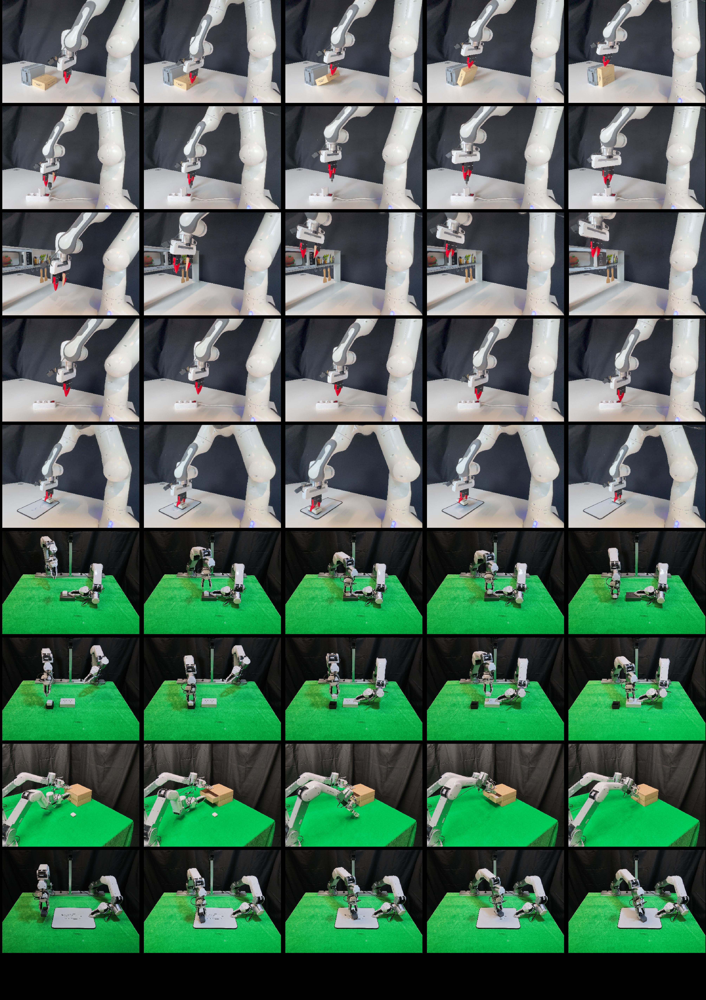

Overview
Learning what to correct
Force-aware vision-language-action policies typically predict task motion and contact-dependent adjustment together. Demonstrations provide the final action, without explicit labels that separate a reusable reference action from its correction.
ForceDelta-VLA constructs correction targets from paired predictions of a frozen teacher. A lightweight policy learns force correction and delay correction, then adjusts reference actions using recent force history and proprioception between reference updates.

Method
Paired teacher predictions supervise two corrections
The force target is the pose difference between the teacher’s force-conditioned and learned force-agnostic predictions. The delay target compares the current force-agnostic prediction with the stored reference and includes reference-state alignment.

Force correction
Paired teacher predictions provide an explicit target for the change associated with force conditioning.
Delay correction
The target accounts for reference-action mismatch and the change in reference state.
Independent execution
The student reuses the latest completed reference and its cached visual–language context while the teacher computes the next reference.
Real-robot results
Nine tasks, two robot platforms
The complete system achieves 82.2% mean success, compared with 54.4% for the original ForceVLA baseline. Direct execution of the Stage-1 Temporal Teacher achieves 70.6%. The complete system improves success by about 11.7 percentage points over this teacher.
| Method | Mean success |
|---|---|
| ForceVLA | 54.4% |
| Temporal Teacher Direct execution | 70.6% |
| ForceDelta-VLA | 82.2% |
Relative to ForceVLA, mean peak contact force over successful trials is approximately 26% lower on both platforms. On Button Pressing, the Temporal Teacher already raises success from 50% to 80%; ForceDelta-VLA further increases it to 85%.
Corrections between reference updates
The correction forward pass takes 2.43 ms, while reference-action inference averages 189.7 ms (approximately 5 Hz for serial inference). Robot commands are transmitted at up to 100 Hz. The command rate and the correction-query rate are distinct.
What the ablations show
Removing force correction reduces success by 15 and 17.5 percentage points on the single-arm and bimanual platforms and increases mean peak force over successful trials by 3.7 and 4.3 N, respectively. A single combined-correction head reduces success by 10 points on both platforms. Removing schedule replay also lowers success, supporting training with delayed references.
Ablations cover 4 tasks, with 20 trials per variant and task.
Generalization to unseen objects
On USB Insertion, Object Flipping, and bimanual Whiteboard Wiping with unseen objects, ForceDelta-VLA achieves 66.7% success, compared with 40.0% for the Temporal Teacher and 16.7% for ImplicitRDP. Relative to the teacher, success increases by 26.7 percentage points and mean peak force over successful trials decreases by 8.2 N.
Unseen-object evaluation uses 10 trials per method and task.
Failure analysis
Insertion failures often involve contact with the rim or jamming while the reference continues advancing. Unstable handle contact or an unfavorable contact direction can require retreating, repositioning, or approaching again. These cases call for new reference actions that change the approach or restore contact.
Task collection
Task Execution Sequences
The evaluation covers 5 single-arm tasks and 4 bimanual tasks. Both platforms use robot-provided wrench estimates. Multi-view images, proprioception, and commanded actions are recorded at 30 Hz; force/torque histories are recorded at 100 Hz.
Single-arm
- Object Flipping
- USB Insertion
- Cabinet Opening
- Button Pressing
- Whiteboard Wiping
Bimanual
- Plug Removal
- Plug Insertion
- Drawer Opening
- Whiteboard Wiping
